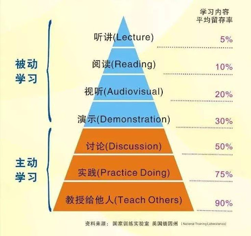

总章
1.1.
概述
1.2.
关于我
开发环境
2.1.
docker
2.1.1.
容器编排工具
2.1.2.
搭建开发环境
2.2.
vscode
2.2.1.
vscode remote使用方法
2.2.2.
快捷键
2.2.3.
常用配置
2.3.
jenkins
2.3.1.
jenkins安装、配置
2.3.2.
gitlab集成jenkins自动编译gitbook
2.4.
其他工具
2.4.1.
使用clang-format进行clean code整改
2.4.2.
ansible简单使用
2.4.3.
vim相关
软件开发
3.1.
python
3.1.1.
性能分析
3.1.2.
面试题
3.1.3.
openstack本地调式环境搭建
3.1.4.
单元测试
3.1.5.
代码隔离
3.1.6.
数据库锁
3.2.
c++
3.2.1.
c/c++基础
3.2.2.
gtest单元测试
3.3.
javascript
3.4.
shell
3.4.1.
正则表达式
3.4.2.
syslog
3.4.3.
常用命令及其用法举例
3.5.
算法
3.5.1.
leetcode题解
3.6.
数据库
3.6.1.
Gaussdb常用操作
混合云容灾
4.1.
OMA架构
4.2.
方案设计
4.2.1.
磁盘ID生成
4.2.2.
Dataset并发传输
4.2.3.
DGW集成
4.2.4.
性能监控
4.2.5.
V2C
4.3.
工具
4.3.1.
DPP Python调试命令行使用
4.4.
总结
4.4.1.
代码结构
4.4.2.
控制类图
4.4.3.
数据流图
4.4.4.
调度框架
4.4.5.
bitmap位图
4.4.6.
DPP消息流
4.5.
竞争分析
4.5.1.
ASR数据同步
云备份
5.1.
架构合一
5.2.
编程规范
5.3.
运作思考
Published with GitBook
概述
肖鹏的随笔
肖鹏的随笔

根据学习金字塔理论，
主动学习中的教学是留存率最高的学习方法。
在以此为践行理念的基础上，将工作、生活、学习的一些点滴记录下来，形成此随笔集。
results matching "
"
No results matching "
"